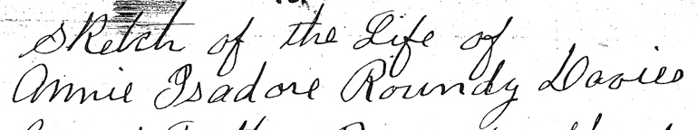

<html><head><title>Sketch of the Life of Annie Isadore Roundy Davies</title</head>
<body bgcolor="white">
<center></center<br>
<cite>[Note: The booklet that contains this history is not written in sequential order. This beginning starts on the right side of page 13. It continues until the left side of page 23 when it continues on the left side of page 27. After the right side of page 27 it continues on the right side of page 1 (I think). It then continues to the left side of page 13 where it finally concludes on pages 28 and 29. The page numbers are shown in this document in brackets at the beginning of each physical page. Other notes of explanation are included, also in brackets. - Joseph F. Buchanan]</cite><p>
Click <a href="viewer.html"> HERE </a> to see the hand-written document.<hr>
[p 13 right]<br>
Sketch of the Life of Annie Isadore Roundy Davies<p>

My Grandfather Roundy, Shadrach, was born Jan 1, 1789. He was married to Betsy Quimby. Them with their family joined the church, came to the valleys in 1847, resided in Salt Lake City. My father Lorenzo Wesly Roundy married my mother, Priscilla Parrish April 22, 1857. She was a third wife. Mother's parents' names was Samuel Parrish, born Sep. 30, 1798, mother's name Fannie Dack, born Oct 28, Ireland, 1798. They settled in Salt Lake, finally moved to Centerville, Davis Co.<p>

My mother had 8 children. Their names was Fannie Jane, married John Henry Willis, helped settle Arizona; Sarah, married James Thomas Berry, [p 14] they also helped settle Arizona - they went to Snowflake & St. Johns; Samuel H. married Eugenia Taylor; Joel Jesse married Catherine Staply; myself; David Alonzo, he died when 11 mons old; Lydia Annis married Josiah Reeves.<p>

My father was called South with his families to help settle. They went to Long Valley. The Indians was so bad they went from there to Kanarra, Iron Co.. [He] was Bishop there for many years. He was called to help settle Arizona when I was 8 years old. In crossing the Colorado River, he was drowned. He said when he left he would never return. The family tried to get him to send word to Pres. Brigham Young how treacherous the river was that time of the year, but he said no. He would go if he knew he would never return. He was drowned May 24 [1876]. My two oldest sisters & husband was called a few years after to go there to help settle the country. This was very hard on my mother as she left with the rest of the family, her oldest son being 13 years old, the next 11. They had to run the farm. They dident have much to get along with then, had to work very hard. We lived in a log house. Finally my father built a frame house with 5 rooms and a cellar with two porches. There was where we were living when he left us.<p>

I was born June 1, 1867 in a log house they used for a saw mill. [p 15] I can remember some things of my father. The chairs they used in those days was made of wood with rawhide cut in strips and wove back and forth across the bottom of the chairs. My father got a little rocking chair for me. I went out to meet him but I was so small they had to lift me across the ditch which ran in front of the house. He ran a coop store and he would sometimes bring me candy. Candy was scarce then. They had to haul their freight from Salt Lake City. It would take them 3 weeks to make the trip. I still remember the first time I washed dishes. I had to stand on a box, but thought I was very big.<p>

The dolls we had was rag dolls. My father went to Salt Lake for freight. He brought my sister Lydia a china doll. I felt bad because he dident bring me one. We went to his other place to get it. I told my sister to let me pack it home because my shawl was bigger than hers. So I packed it home. It was pretty. President Brigham Young came through visiting the Saints, going through to St. George. He would stop at my father's. They had a room fixed up for him. They called it Brigham room. He was a fine looking man. The night we got word my father was drowned was a sad time. We was all in bed. It was 11 o'clock at night. The telegram came [p 16] to Cedar City before dark and they never came to tell us till that late. We got up & dressed, went up to one of my Bro.'s place. The older boys was mostly out on the farm about a mile away irrigating. We finally came home and went to bed. I was sleeping on the floor. I was trying to go to sleep. The moon was shining. I looked up. There was a lady standing over my bed. She was bending down looking at me. Her hair was cut short. It frightened me. I covered my head. Mother said she had an aunt die with that description.<p>

My father & Bro Ford owned a grist mill by the foot of the hill east of town. I used to go up there sometimes. There was a man, Bro. Riggs run[ning] the mill. He was a carpenter. I was play[ing] with the shavings one day. I was near the fire place playing with the shavings. [They] caught on fire, so did my dress. I would have been burned to death if it hadent been for Bro. Riggs. It seems the Lord can spare our lives when our time hasent come. When my two older sisters was at home I dident have much to do. I would run away to one of my half-sisters, Lyndia Pollock. Her health wasent very good. I would work for her and I learned how to wash on the board. I wasent tall enough to reach down in the tub so would stand on a box. My mother would take [p 17] a little switch to me when I came home but that dident stop me. I would go again.<p>

The summer I was nine years old I went with my mother & 2 Bro. to Dixie. My father had an orchard at  Virgin. We would go down there and dry fruit. We lived in a room with a half roof. It was across the Virgin River. I used to wade it to go over to town and see some friends. They wasent much sugar those days. The people dried nearly all their fruit. They would have bees and invite a bunch. They would have good times. They soon got to making molasses in Dixie and that helped out.<p>

All the lights they had was tallow candles. Spun and wove their own cloth. Made it my hand, spun the yarn and knit all their stockings. They had more time those days than they do now. The sisters would take their knitting and go visiting and stay all day. I would go to the field and pick up potatoes barefooted. One day I was leading the horse and she stepped on my bare foot. It hurt but I soon got over it and went home.<p>

My mother was chosen president of the Primary. That was the first that the Primary had been organized. Sister Eliza R. Snow came down from Salt Lake to organize. They felt that the children needed to be taught and looked after more. She was a fine looking woman. I went to Primary. We dident have classes [p 18] then for a long time would have programs. And the children would take part. When I was old enough I went to the Young Ladies Mutual. We would get up plays and visit other towns - Harmony and Cedar City. They held the Fast Meeting for some time on a Thursday evening. Finally changed it to Sunday. In Sunday School they would have us read books such as the Bible [and] Book of Mormon. Each would read a verse, then the next one. We dident pay attention when the others was reading.<p>

One Sunday I was about 16, a bunch of girls and boys - we went for a walk. There was a pretty meadow west of the town. In the field we was hunting flowers & water cress. I went out on a pole, which was across the spring, trying to get some cress, when I fell in. I went in up to my neck. I never knew how I got out. The crowd was so excited they dident [k]no[w] what to do. I got out some way but I couldn't remember anything from the time I fell in till I was out. I had on a new gingham dress. It was all muddy. I sure felt bad about it. I think my life was saved by some divine power.<p>

The young people would go to Harmony and Cedar to dance. We also would go to Parowan & Cedar to quarterly conferences. We went in lumber wagons. [p 19] How would you young ladies feel setting beside your Beaus on a spring seat going to conference? I guess you would go. Well I did and enjoyed it. There was a boy came one night when I was out in the corral milking a cow. He came out there and ask[ed] me to go to the dance with him and I wouldent even answer him. I was sure hard hearted, wasent I? But he wasent the right one. I also learned how to spin yarn & knit my own stockings. I would of had to go without if I dident. The yarn would be lumpy. And I made my own dresses. When I was 17 I would try to make them a little like the style. They wore puckers and bussles then. If they dident suit mother, she would make me make them over. My two bros. Samuel and Joel had to run the farm I would help pick up potatoes. I was leading the old mare down the furrow. When she stepped on my foot, I was bare footed, it sure did hurt but I soon went on. I milked cows. Mother thought it was to[o] hard on the boys to do all farm work as they wasent very old when we were left alone, so I done my share.<br>
[p 20]<br>
Mother went on the mountain to run a dairy. I and Lydia & Heber was with her. That was about [18]82. It was the time William Berry was killed by the mob when on a mission. His family was on another ranch when they heard of his death. The family went to town and got mother to go and stay on this ranch. We had their cows & ours - had about 24 to milk. There was a few times I milked about 21, 22. I had to go on an old mare and hunt cows. Sometimes I would run across a bunch of deer. That was thrilling.<p>

[p 20, right is a note from 1936, included later in the document.]<br>
[p 21, left - blank]<br>
[p 21, right]<br>
I started to keep company with my husband when I was about 16. We went together steady till we were married - got along fairly well. Love never runs smooth. There was another girl wanted him, but I won out. The first time he took me home was the last night of the old year. We were to a dance. We married for better or worse on 10th day of Feb. 1886 in the St. George Temple. Bro. McAllister was the Pres of the Temple then. We went down in a wagon - was nearly two days goin' & two coming back. That was some romantic trip, wasent it? There was a man from Salt Lake rode down to St. George with us. He was hiding from the officers for [p 22] plural marriage. His name was Bishop Sheets. He told us if we would never get mad both the same time we would get along all right, but that was hard to do. We came home, our folks had a wedding dinner for us. Had it in the meeting house, invited nearly all the town, and a dance at night. My wedding dress was blue velvet trimmed with cream silk lace. I had a fancy plaid shawl. They wove shawls then instead of coats. <p>

We lived that summer at my mother's place. She went to Centerville to stay with her Bro. Joel Parrish. They spent the summer in working in the Salt Lake Temple for the Dead. Joel & Lydia & Heber was still at home. While we were living there we built us a two roomed brick house. [We] moved there after our first baby was born. That was Nov. 29. We had 7 children born in Kanarra. [We] had a pair twin girl[s]. That was the exciting time. My husband lead the choir for many years. While there he farmed & sheered sheep. We had a ranch on the mountain. We went up there several summers to run a dairy. We made cheese & butter to sell. It was cooler up there. I felt better up on the mountain. We had some neighbors up there - Aunt Mary Williams & Pa's sister Martha Williams. We would get together and have some good times.<p>

When Adelbert was a baby he was very sick. We couldn't touch his [p 23] toes but what he would scream. We had the Elders to administer to him & he dident get much better. We finally had my Bro. Myron and his grandpa in the evening and he was instantly healed. We went to bed with him. He was all right in the morning. When Wilmer was born he had bad choking spells, kept getting worse. We had the Elders and he never had another spell. There is great power in the Priesthood if we will live for it and have faith. That is the first thing we thought of when any got sick. There wasent any doctors. I don't see how we could have raised our children without the help of the Lord. Now it is all doctors.<p>

[p 23, right - history of Lorenzo Wesley Roundy, included later. goed until p. 26]<p>

[p 27] When we had two children the fall before Jennie was born, father's step mother, we called her Aunt Betty, she got very sick. I went and helped take care of her. Rachel & Maggie, Pa's sister, was working out. I stayed with her most of the time. She died, then Pa's father wanted to come and live with us. We only had the two rooms. There was his father & Bros. Phillip & David and Maggie. Part of the time  her & Rachel worked out that winter. We built another room. Finally Rachel & Maggie got married & David went to live with his mother's folks. Bro David & Phillip was with us for about 10 years. We finally built another room for Grandpa as he couldn't stand the noise of the kids. We dident have things as easy as now. I knit stockings for my children, myself & husband - made all their clothes, underwear, pants & coats. I would knit a stocking a day. No electric washers. Washed our clothes on a wash board. No electric iron. Finally got a washer that we turned by hand. No carpets, only rag carpets. No linoleum, had to scrub our floors, but we had time to visit.<p>

[p 28 and 29 included later, this story now continues on page 1, right side]<p>

[p 1, right] In 1900 we sold our home & farm - was getting ready to move to Venice, Sevier Co., when the children got the measles. We had six to have them. It delayed us a month. We had cattle to drive out, that was gone. We came by a team [and] had a sheep wagon [and] was 8 days on the road. It was quite a tedious journey. When we got here we stopped at John Ford's, he was from Kanarra, to visit Lydia, my sister and her husband and family was already here. We bought a house on the north side of the river from a man named Louis Michelsen. We lived there a few years. Stanley and Laverda was born while we lived there. Then we [p 2] traded homes with Jim Jakeman which was across the street, east from the old school house. There wasent very many families when we came here and not very many trees. People said they couldent raise trees here. I dident want to live here if the dident have trees but there is trees here now. After we moved to this last place Laverda May died on Jan 26 [1907], and on July 17, 1910 Fay was born. I had never been ask[ed] to take much part before this in the church. I always went to all the associations. About this time we rented Bro. Ford's farm. It was the old cutback farm Hyrum Ford was running. It then when he was called on a mission. I lived there one winter. I had a very severe sick spell. If the Lord hadent blessed me, I would have died. But I guess my mission wasent finished for it was from then on that I had a chance to work in the church. At that time there was a patriarch living in Loa. His name was Bro. Blackburn. My husband & I went over there to get our blessing. He said I had a mission to fill in working with the sisters in presiding over them and that I was that day chosen as one of the Elect. He told me lots of things that had come to pass. I dident think it could, then. That was when we lived down at the Ford place. I was soon after that asked to be a Relief Society visiting [p 3] teacher and was chosen teacher in Primary. I enjoyed this work for I got to go and visit the sisters and get acquainted with them. We went to the Manti Temple to do some work. [We] dident have any names of our own then but we done for others and finally got some on the Roundys & Parishes in 1907. I was chosen counselor in Relief Society. Caroline Buchanan was Pres. Ella Wall was the other counselor. She went to Salt Lake to take a nurses course and she  [?]  worked two years, then Florence Cowley was put in President. I was chosen first counselor to her, 1909, worked with her till 1916. On account of ill health she resigned, and then I was chosen President with [?] Cowley and Ida Buchanan counselors. In 1908 was president of Primary for 6 years while I was working in the Relief Society as counselor. I was President of the Primary for 8 years. On account of poor health was released. I went to take care of the sick when ever I was called and helped take care of the dead. I never let my work hinder if I was needed. My husband was very good to help me or I couldn't of done so much. When the world war was on we knit sweaters & socks for the soldiers.<p>

I was captain of the Daughters of Pioneers for two years in 1927 [?] 26, in 1928 was teacher in Young Ladies Mutual, 1917 was assistant teacher to parents class [p 4] in Sunday School.<p>

My husband and I, Clarence and wife went to Kanarra for a visit in July 22, 1918. We went to the Manti Temple, stayed a week, had Fae baptised for her health May 15, 1919.<p>

My husband's sister Martha and husband R. J. Williams and their two sons, Cumen & Wells came from Kanarra to visit us. July 16, 1919 we went with them. My husband & I, Clorene, our daughter & Stanley & Fae - we went to Wales to visit some relatives, Reeves & Davies lived there.<p>

[I] was a worker in genealogy with my husband, Sarah Miller & Bro. Miller. We went to Manti to a Genealogical Convention on record keeping.<p>

The Lord says that sacrifice required of those who would attain the greatest reward.<p>

There is many blessings for us if we live for them. We have to overcome selfishness and envy. This life is a school to see what we will do. We have our own free agency, to choose for ourselves, whether we will go on to eternal progression or not. I hope that my children will take the right side and be true to the Gospel of Jesus Christ for there is nothing outside of that, only misery, and seeing where they could have been. I [k]no[w] the Gospel is true and I hope I will even live worthy to be called a latter [p 5] day saint. My parents & grandparents went through many hardships for the Gospel sake. If I can only be as true as they were. It is such a wonderful thing to be worthy of being a member of the church of Jesus Christ & I do humbly pray for my children & grandchildren, and myself to heed the warning that is given to us from time to time from the church leaders. They are placed over us for us to be guided by. We are going to have many trials and temptations to go through, but if we will ever be prayerful and live right, the Lord will keep us.<p>

My children has all been married in the Temple but one. I hope he will come sometime.<p>

June 8, 1926<br>
Myself & husband & Hal went on a trip to Idaho. We stayed at Provo with my niece Eliza Fillmore the first night. [We] went and saw the steel works [and] went [the] 9th to my nephew's Willie Roundy, at east of Lehi [and] stayed over night. My Bro. Samuel was there. We had a good visit. 10 We went to Salt Lake to Bro. & Sister Jackson's son, friends of ours. We got word as soon as we got there that Jennie was coming to see the doctor, as she had been ailing with her side for some time. She went to the county hospital and took X-ray. [p 6] Allen Cowley was there. He was her Bro. in law. They finally took her to the LDS hospital. She was operated on June 14 by Dr. Hatch. They [had] taken a stone from the tube above her bladder. While we was waiting to see how she was getting along, we went through the temple. On Sunday we went to Primary Conference. On 16 we went to the temple for 3. There was 300, 198 went through for the first time. One sister had been baptised for one hundred and eighty two thousand. We went on our journey [on the] 17[th] as Jennie was feeling better. We ate dinner at Logan, went over, stayed one night at Inkom, 15 miles from Pocatello, went on to Rigby, Idaho, arrived at our son Henry A., 11 am. He wasent home, was shearing sheep. He soon came home. We had a good time. While there we took Fae & Louise out to the Riverside dance hall. It is a swell place. Next night we went to the show. On 22 we visited Mary Jakeman and had dinner with her. We ate dinner with Edna [on the] 20[th], She married Henry Jensen. We went 21 to Madge's. She married Clyde Cordon. 23 went to the show. 26 We went to Goshen to visit an old friend, Sophia Killien. She used to live in Venice. We went to look at the Idaho Falls. 27 We went to Heises Springs. We crossed the Snake River on a ferry boat. We all went in. Bathing Birts family was all there. We enjoyed ourselves very much. [p 7] We also visited Lee Jakeman & wife. We started for home. 28 We ate dinner at Pocatello Canyon. [We] camped that night at Kaysville, went in to Salt Lake the next morning for breakfast at Bro. Thomas Jackson's, went and had dinner at my niece Eliza Ingram. We went to the temple, went through 2. We went on home.<p>

Clarence was operated on for appendix 1927. Pa and I, Clarence & wife went to the Manti Temple, stayed 3 days, worked on the Roundy record. Our youngest son Stanley was called on a mission to Old Mexico 18 Nov. 1922, returned Nov. 9, 1924, had typhoid fever while he was gone. We went as far as Salt Lake with him.<p>

We went on a ward reunion Aug. 19, 1927. We went to Maple Grove. There was 16 cars went, had a good time. I boarded a school teachers. The first was Allie Davis, my husband's niece & a Mrs. Hunt.<p>

One year Miss Olana [?]royd from Cedar City, Miss Jessie Beal from Ephraim. Clara Johnson from Redmon. One year alone, the next year I had her and Mrs. Reese from Beaver. The next year Jessie McAllister from Canab. The last year they were there I took sick, was operated on for gall trouble. They taken my gall bladder out, also my appendix. I was very sick. On Dec. 28, 1929 the Lord surely blessed me or I [p 8] would not a lived, and in May 1921 has a spell of flu, was very sick. I went to Provo for treatments - for my nerves. The Lord can surely bless us and spare our lives if our time hasent come. I [k]no[w] this several times in my life. If I can only live and do what is required of me. I thank him every day for my life for his kind care. My patriarch blessing said the Lord and guardian angels would watch over me and preserve my life from death and I [k]no[w] they have many times.<p>

Florene was operated on at Salt Lake, had her goiter taken out. 19 [?] Jennie had an operation, had her goiter taken out in Richfield by Dr. Godferson Nov. 1929. Wilmer had an operation, had his appendix taken out 1930 in Aug. at Richfield. My son's wife Bert [Eliza] died in Idaho Jan 1932, left 7 children.<p>

John L. & wife, Bro. Newby & wife from Monroe & my husband & Fae and myself started for Zion's Canyon, 23 Aug. 1927. We had car trouble - only went as far as Parowan first day. The next morning we went to Kanarra, stayed a while to see the folks, went to Dixie, stopped at my nieces, Stina Anderson, had water melons & fruit, went on to Hurricane. Stayed that night with my Bro. Heber [?] We went to Zion's Canyon and spent the day.<p>

[p 9, left side blank] <br>
[p 9, right]<br>
I went to Salt Lake with Clarence & wife to conference, Oct 6, 1934. We went up 3 o'clock Saturday morning, went to conference all day, went to a Roundy reunion Sat. evening. I met quite a lot of relatives there. Samuel & Heber were there Bros. We had a good time together discussing genealogy work. They organized. I saw my sister Sarah & husband from Arizona there. I hadent seen her for 25 years.<p>

We went to Denton Jacksons and stayed that night. They treated us very nice. We went to Conference Sndy. Had a very good time. The spirit of the Lord was there.<p>

[p 10 - this seems to be some flash backs]<br>
In 19  my mother was going to Salt Lake to the [?] G o A R selbration [Note: This could be Daughters of American Revolution celebration, though the first letter really looks like the G she used earlier in Gall Bladder. - jfb]. She took me with her. We stayed at my cousin's place, Orilla van ginten [?]. We had a nice time. Jennie was there at that time going to summer school.<p>

about 1914<br>
My husband, myself & Faye went to Idaho. We got there on New Years Day, went on the train. It was sure cold weather. Bert was after wood when we got there. He dident [k]no[w] we were coming. This was 1913. We had a good time. Bert was our son. Him & family was living there.<p>

When we moved to Venice, my mother wanted to come out here as she had no daughters left in Kanarra. My husband moved her that Fall. There was quite a hard earthquake the night he left here. We was all frightened pretty bad. My mother came out. She lived with us & Lydia. We built her a room on our place after we moved closer in town. She had pretty good health for some years. She was staying at Lydia's when she had a stroke. We moved her down to our place. She was bad for 3 months. Couldent talk. She died Aug. 10, 1914, was buried at the Venice Cemetery.<p>

[p 11, left side blank] <br>
[p 11, right]<br>
My husband & I, Fay & Floyd & Beverlee Ann went up to Sevier Canyon and spent the day looking at the beauties of nature. On one edge of rocks on the east side of the canyon it looks like a lady playing a pipe organ. We eat breakfast & then had fried chicken for dinner. We climbed a hill to see a small cave. It was hard work, but we got to it all right. This was June 1934, 10th.<p>

May 1935 Floyd & Fay & baby Beverly took Dad & I, Fay's father & mother, H. W. & A. I. Davis up Clear Creek Canyon. We spent most of the day up there, went nearly to Kimberly. There is beautiful [p 12] mountains up there. Came back, went to Monroe to see Lois Johnson, Henry's niece, who had been operated on. Came home.<p>

On June 9, 1935, Ray Cowley & wife Jennie & baby Gary & Fae & baby Beverly Ann and Henry W. Davis & wife Annie I. Davis, Ray was our son-in-law, we started to Logan, Utah to see our daughter & family. Florene Buchanan husband's name was Earl. We left Venice, Sevier Co., 5 AM in the morning, arrived at Logan 2 AM. Ray & wife & Fay came back the following day. While there Sunday afternoon we went up Logan Canyon. It is a lovely place up there. My husband and I stayed a week. We had a very good time. While there we went through Logan Temple 3 times. It was so busy & so crowded it was hard to go very much. I went to Relief Society twice & to the Annual meeting of the Daughters of the Pioneers [written note in document: HER DUP NUMBER IS 1932]. We had a nice time while there visiting with our daughter & family. Logan is a very beautiful place. On Sunday 16, we came home with Abner Cowley & wife. They had been to Trenton visiting his wife's folks.<br>
[end of p. 12]<p>

[Now, the events of page 20, right side, seem to fit chronologically]<br>
[p 20, right side]<br>
Went on Easter, April 12, 1936, with Jennie & Ray. They was taking their daughter Vivian to Salt Lake to go on the bus back to Pennsylvania where her uncle Allen Cowley is living. I went as far as Pleasant Grove, stayed with my Bro. Heber & family, had good time visiting, returned that evening.<p>

Stanley paid on Doctor Gledhill $2.00<br>
Liver[?] medicine 1.35<br>
[end of p. 20, right side]<p>

[p 28, left side blank]<br>
[p 28, right]<br>
On June 1936 My husband took sick. He ran the mail till Saturday, had a bad spell Sunday, July 7 [This must have been June 7, which was a Sunday. - jfb]. I went to Sunday School & when I came home he had a bad spell. His system was full of albumen. I felt very bad to think I had left him, but he seemed to feel pretty good when I left, but his health hadent been very good for some time, but he kept working. We took him to the Dr. He said he was full of poison. We took him to Dr. Low. He seemed to help him some for a few days, then he got worse and he died on the 2nd of July 1936, was buried on the 5 July. His Bro. John [p. 29] & some of his children was here. My Bro. Samuel & Heber & wife [another name, something like Waldo & wife also listed] was here, and all of our family. Bert came from Idaho. The services was nice. They had singing from Richfield. My Bro. Samuel was the one that offered the opening prayer. Bro. John Ford, Bishop Cowly, President Young was president of the Manti Temple, had been Pres. of the Sevier Stake, was the speakers.   [blank] offered the benediction. He was buried in the Venice Cemetery. The Relief Society served us all lunch after. We appreciated it very much. That is one of the sad things that come to me when you are left alone, but when the Lord wills it, we have to make the best of it.<p>

[This is the last page. Part of the page is torn so the following is just the words I could read.]<br>
Clarence & wife w<br>
little trip they took<br>
them Aug - we<br>
Bro. Hebers the first<br>
Pleasant Grove stay<br>
with him & fam<br>
Day went in<br>
stayed over su<br>
my daughters & F<br>
up Logan C<br>
lunch<br>
Lake City St<br>
Jacksons Zelph<br>
Went next<br>
a while at<br>
and went<br>
where Zel<br>
Jukes.<p>

[Page 1, left side is also torn. Here is what I can get from it. I don't know how it fits in with the rest.]<br>
      to each other<br>
      sealed.<br>
       , the manifest<br>
        it prevents<br>
      understood that<br>
     ions, and we<br>
     was her Chol<br>
      intensions<p>

    ncerely your Be<br>
       Davis<p>

[p 13, left side - this seems to be a memory, just entered on this page.]<br>
When I lived in Kanara, I made all my children's clothing, pants, coats, undershirts and knit all their stockings. There wasent any ready-to-buy. I washed on the Board, finally got a washer, but had to turn it by hand as there was no electricity.<p>

[also on p 13, left side, in different handwriting, possibly from Deane Buchanan Wilcox]<br>
Priscilla Parrish Roundy was the Pioneer.<br>
Since there are 3 generations of us as members of Daughters of Utah Pioneers, we are in the Honorary Heritage Section of DUP. Deane B. Wilcox has an Honory Heritage Certificate and Honorary Heritage Pin.<br>
Deane Buchanan Wilcox DUP # 42008<br>
Florene Davis Buchanan DUP # 3494<br>
Annie Isadore Roundy Davis DUP # 1932<p>

- - - - - - - - - - - - -<p>

[p 23, right side]<br>
History of Lorenzo Wesley Roundy<br>
He was the second son of Shadrach Roundy. His mother being Betsy Quimby before she was married.<br>
He was born June 18, 1819 at Spafford, N.Y. His father was presiding in the town of Spafford when they heard of the Revelations of Joseph Smith, and they soon embraced the Gospel of Jesus Christ. Soon after the family moved to Pennsylvania, and from there to Kirtland, Ohio. There they helped build the Temple. Lorenzo shared all the hardships that the Saints went through. He was a member of the Nauvoo Legion. After arriving in Salt Lake City, he was a member [p 24] of the Nauvoo Legion & took part in the Indian wars in the Mormon Colony. He came to Salt Lake with his parents in the year 1847. He was 8 generation in descent from Phillip Roundy who died in Salem Mass in 1678. He went from Salt Lake City to Centerville, Davis Co. He married Adeline Whiting in 1843. She died in 1845. By his first wife he had 2 children, boys, one died in infancy, Myron Shadrach was the one living. Then he married Susannah Wallace, 1858 [The 58 is crossed out. He married her in 1847. - jfb]<p>

Children a follows<br>
Wallace Wesley, 2 Malinda Elizabeth, 3 Matilda Ann, 4 Celestia Almeda<br>
[p 25] 5 Mary Isabella 6 Betsy 7 Napoleon Bonepart 8 Lorenzo Wesley.<p>

In 1857 he married Priscilla Parrish. There was 8 children 1 Fannie Jane, 2 Sarah, 3 Samuel H, 4 Joel Jesse, 5 Annie Isadore 6 David Alonzo who died in infancy 7 Lydia Annis, 8 Heber Lorenzo.<p>

While he was living at Centerville, he was called to go south to help settle the country, went in the year 1866, went down at Canab, and the Indians was so bad they couldent stay there. They killed one of the company while there. His name was Robert Berry. They went from there up to Kanarra, Iron Co., Utah. As soon as they arrived there my father went to work to make homes for his familys, and to clear land to farm. There wasent any water in the valley. They had to go to the mouth of the canyon for water. They made ditches and worked with the water till they got it down in the valley. They soon put up a saw mill to saw timber for to build houses. He was chosen Bishop of the ward. They started a co-op store. He went to Salt Lake by team to bring merchandise. They also had co-op sheep herd & stock. They was still troubled with the Indians. He was captain in the Indian trouble. They went through many hardships & trials. He was a Father to the people where he resided. All the people loved him, went to him with his troubles. After he had built up Kanarra, he was prospering there, built two nice homes for his two families. He was called to go and help settle Arizona. He had made two trips, was called the third time. It was in the spring, May, when the Colorado River was very high. He told his family that he would never come back alive. They told him to send word to Brigham Young how he felt, but he said no, he would go if he [k]new he would never return. He went & we [k]no[w] the rest. Was drowned May 24. He stayed in the boat, the last one.<br>
[The end]<br>
</body></html>